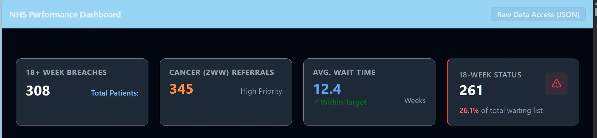
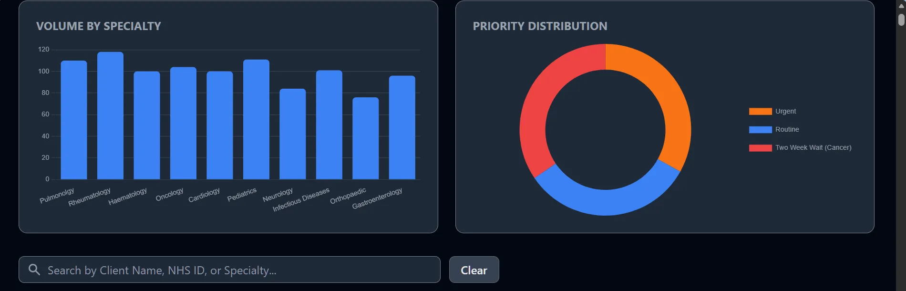
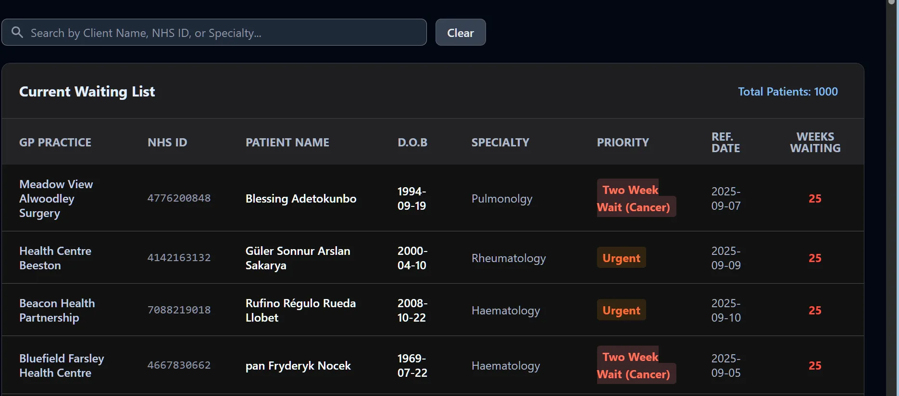
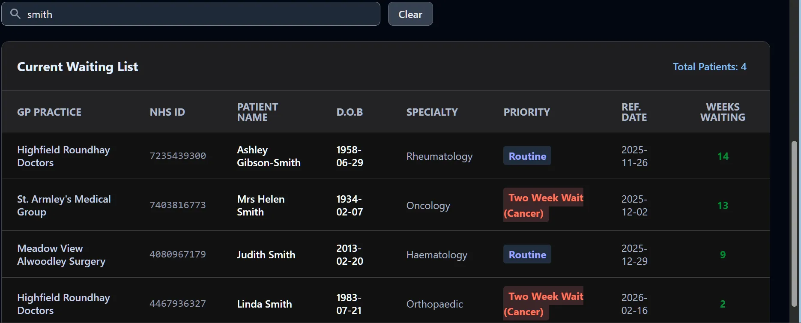

NHS Performance Dashboard


An end-to-end Clinical Intelligence suite that monitors patient wait times and predicts RTT (Referral to Treatment) breaches using a high-performance DuckDB analytical engine. This project features a full modular pipeline: synthetic patient generation with Faker and nhs-number validation, high-speed data processing via Polars and Pandas, and a FastAPI-powered dashboard with real-time waitlist metrics and specialty distribution charts
📸 Screenshots




🛠️ Setup Instructions
Clone the Repository
git clone https://github.com/reory/nhs-performance-dashboard.git
cd nhs-performance-dashboard
1. Create a Virtual Environment
python -m venv venv
source venv/Scripts/activate # On mac/linux venv/bin/activate
2. Install Dependencies
pip install -r requirements.txt
Initialize the Data Engine
python generate_faker_data.py
Launch the Dashboard
Run the Uvicorn server to host the FastAPI application.
uvicorn app.main:app --reload
Navigate to http://127.0.0.1:8000 to view the live clinical suite.
📂 Project Structure
nhs_performance_dashboard/
├── app/
│ ├── main.py
│ ├── database.py
│ ├── models.py
│ ├── routers/
│ │ ├── api.py
│ │ └── dashboard.py
│ └── templates/
| ├── html_components/
| | └── charts.html
| | ├── metrics.html
│ | ├── navbar.html
│ | ├── search_bar.html
│ | ├── table.html
| ├── js_components/
| | └── charts_logic.html
| | ├── js_scripts.html
│ | ├── metrics.html
│ | ├── search_logic.html
│ ├── base.html
| ├── index.html
├── data/
│ └── hospital_data.db
├── scripts/
│ └── generate_faker_data.py
| └── view_all.py
├── tests/
| └── conftest.py
| └── test_clinical_logic.py
| └── test_connection.py
| └── test_validation.py
├── .venv
├── requirements.txt
├── README.md
├── CONTRIBUTING.md
├── LICENCE.md
├── pytest.ini
💻 Tech Stack
- Framework: FastAPI (High-performance Python API)
- Database: DuckDB (In-process analytical database)
- Validation: Pydantic & nhs-number
- Testing: Pytest (Unit and Logic testing)
- Frontend: Jinja2 Templates, HTML5, CSS3 (NHS Frontend Framework styles)
🧪 Testing
Consistent with my professional workflow in the West Yorkshire Traffic Intelligence Suite,and other projects, this project includes a full Pytest suite to ensure RTT breach calculations and search logic remain modular and predictable.
pytest
🤝 Contributing
Contributions are welcome! If you have ideas to improve the nhs performance dashboard UI or logic:
Fork the Project.
Create your Feature Branch (git checkout -b feature/AmazingFeature).
Commit your Changes (git commit -m 'Add some AmazingFeature').
Push to the Branch (git push origin feature/AmazingFeature).
Open a Pull Request.
📝 Notes
Data Privacy: This project uses synthetic data generated by Faker. No real patient data is included or required to run the demo.
Hybrid Data Strategy: Much like my Word Counter Vault project , this dashboard utilizes DuckDB for high-performance (Analytical) queries while using FastAPI for low-latency web responses. This ensures that complex RTT breach calculations don't block the main application thread
Modular Component Architecture: To ensure scalability and maintainability, the UI is architected into standalone htmlcomponents and jscomponents. This allows for a "plug-and-play" development cycle where individual dashboard metrics can be updated without refactoring the entire core layout.
Automated Validation & Testing: The system includes a full Pytest suite and nhs-number checksum validation to ensure clinical data integrity—mirroring the "modular and predictable" package standards implemented in my previous projects.
🗺️ Roadmap
[ ] Email Alerts: Auto-notify admins when a patient is nearing the 18 week threshold.
[ ] Predictive Analytics (ML Forecasting) Implement an XGBoost or Scikit-Learn model to predict potential breach "hotspots" based on historical specialty volume and seasonal trends, similar to the logic used in my Invoicing Fraud Detector.
[ ] Geospatial Regional Mapping Integrate a Folium/Leaflet map component to visualize patient distribution across West Yorkshire, allowing trust managers to identify geographical barriers to care access.
❤️ Thanks
Faker - For helping create the fake data. The NHS Digital Community: For maintaining the open standards and logic found in the nhs-number validation libraries. The FastAPI & NiceGUI Teams: For creating high-performance frameworks that make complex clinical dashboards possible with Python. The Open Source Community: For the Faker and DuckDB projects, which allow developers to build and test robust systems without compromising real-world patient privacy.
Built By Roy Peters Click here for contact details😁